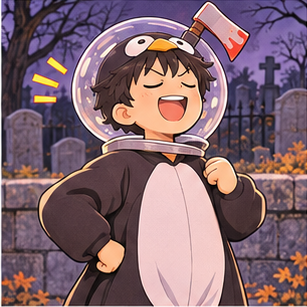
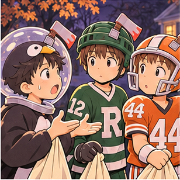
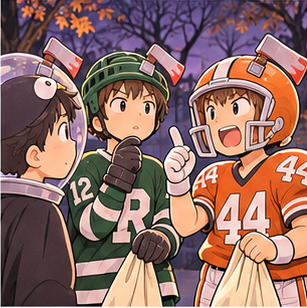
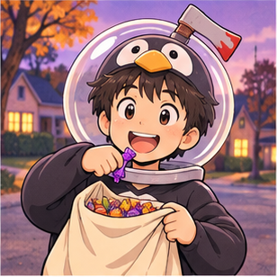
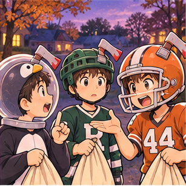

Chapter 6. Giant Bananas and Two-headed Astronauts - Part 3 of 3
Luckily, most people gave us candy. But at one house a man gave each of us a instead. He said he candy.

Getting a is almost as good as getting candy because you can use it to *buy* candy.We had been trick-or-treating for some time when we walked past a spooky . That me of the Halloween Monster again.

Nothing scares me. I would fight a bear. I would fight a lion.

I would fight an elephant. (Well, I don't think elephants fight. If one of them did, I would beat it up.)

But I really didn't want to see the Halloween Monster.It was starting to get a little dark and out."Hey, if you guys get up by the Halloween Monster," I asked Ryan and Michael, "can I have your candy?"

"There's no such thing as the Halloween Monster, dumbhead," Michael insisted.But just in case, we made a deal. If one of us was up by the Halloween Monster and the other two , they would the dead kid's candy.

And if two of us were up, the kid who lived would get all the candy.I wondered if Ryan and Michael were hoping that I would get up by the Halloween Monster so they could my candy. I figured they were probably thinking that, because I was hoping they would get up by the Halloween Monster so I could keep all *their* candy.

It really didn't matter, because each of us was filling our pillowcases with about a million hundred tons of candy. Mine was getting . It would be hard to eat all that candy in one night.

But my mom tells me I can anything if I . "I'd better eat some more of this candy," I said, reaching into my . "It's getting too to carry."

"You'll still be carrying it," Michael said. "It will just be in your .""But it weighs less in your—"

I never got the chance to finish my sentence because at that very moment, the most thing in the history of the world happened. A jumped out from behind a wall right in front of us.It was the Halloween Monster!